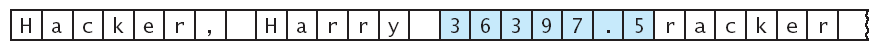
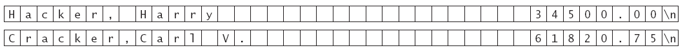

prog -v input.dat
int main(int argc, char* argv[])
{
. . .
}
argv[0]:
"prog" argv[1]:
"-v" argv[2]:
"input.dat"
Plain Text
M e e t
m e
a t . . .
Encrypted Text
P h h w
p h
d w . . .
caesar input.txt encrypt.txt
caesar -d -k11 encrypt.txt output.txt
fs.seekg(n, ios::beg);
fs.seekp(n, ios::beg);
n = fs.tellg();
n = fs.tellp();
fs.seekg(0, ios::end);
long file_length = fs.tellg();
Then raise Harry's salary by 5.5 percent to $36,397.50.
The update overwrites some characters in the next field.
Name: 30 characters
Salary: 10 characters